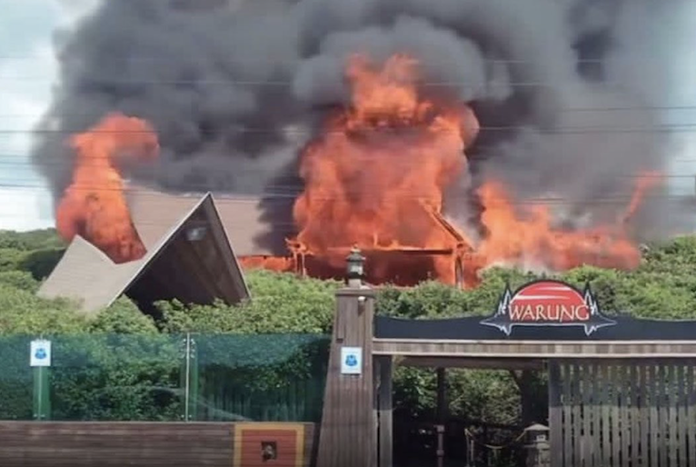
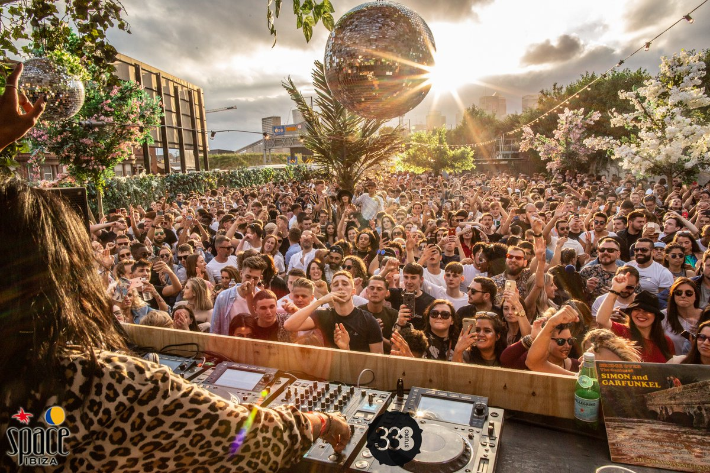

Clubes Conhecidos Mundialmente
Warung Beach Club - Praia Brava, SC
O clube Warung que era considerado por muitos fãs um clube único no Basil e até no Mundo. Infelizmente, foi destruido em 2023 por um incêndio. Felizmente ninguém se feriu com o acidente e já existem rumores de que um novo club da franquia esta por vir!
Muitos consideravam o Warung quase como um lugar sagrado, era também conhecido como "Templo", e hoje ele mantém-se apenas na memória e nas boas recordações dos fãs.
Recordação do Duo The Martinez Brothers (USA) e Seth Troxler mixando a música "Rei dos Sete Mares" de "Tim Maia" no Warung Beach Club (mixagem na metade do vídeo).
Perdão pelas imagens, foram gravadas com um celular, mas está totalmente audível!
Ver o vídeo com fones de ouvido!
The Edge Club - São Paulo, SP
Club Vibe - Curitiba, PR
Space Club - Ibiza, Espanha
Este é o club onde o DJ Carl Cox foi residente por 14 anos, e onde o Artista Brasileiro Mochak foi convidado para se tornar residente a menos de um mês atrás.